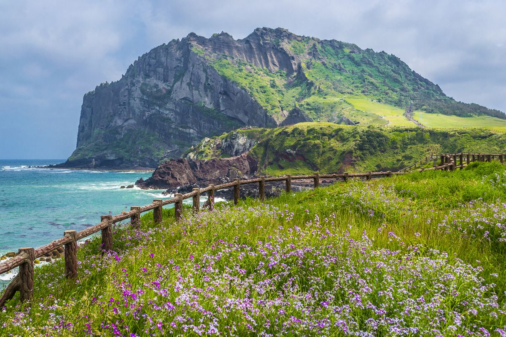
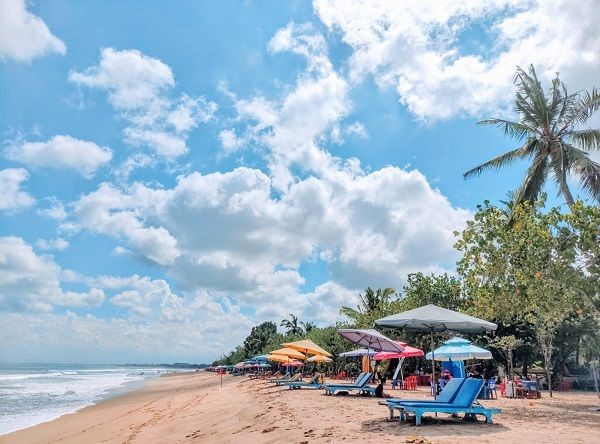

Pulau Jeju

Pulau Jeju (Jeju-do) adalah pulau terbesar di Korea dan terletak di sebelah selatan Semenanjung Korea. Pulau Jeju adalah satu-satunya provinsi berotonomi khusus Korea Selatan
Terletak di Selat Korea, sebelah barat daya Provinsi Jeolla Selatan, yang dahulunya merupakan satu provinsi sebelum terbagi pada tahun 1946. Ibu kota Jeju adalah Kota Jeju (Jeju-si).
Sejarah

Pantai Kuta adalah sebuah tempat pariwisata yang terletak di kecamatan Kuta sebelah selatan Kota Denpasar, Bali, Indonesia. Daerah ini merupakan sebuah tujuan wisata turis mancanegara dan telah menjadi objek wisata andalan Pulau Bali sejak awal tahun 1970-an. Pantai Kuta sering pula disebut sebagai pantai matahari terbenam sebagai lawan dari pantai Sanur. Selain itu, Lapangan Udara I Gusti Ngurah Rai terletak tidak jauh dari Kuta.
swiss
Swiss, secara resmi bernama Konfederasi Swiss (Jerman: Schweiz, Prancis: Suisse, bahasa Italia: Svizzera, bahasa Romansh: Svizra, bahasa Latin: Confoederatio Helvetica), adalah negara federal berisi 26 kanton di Eropa Tengah yang berbatasan dengan Jerman di utara, Perancis di barat, Italia di selatan, Liechtenstein dan Austria di timur. Swiss adalah negara yang sebagian besar wilayahnya terdiri dari Pegunungan Alpen. Swiss dikenal sebagai negara netral namun tetap memiliki kerja sama internasional yang kuat.